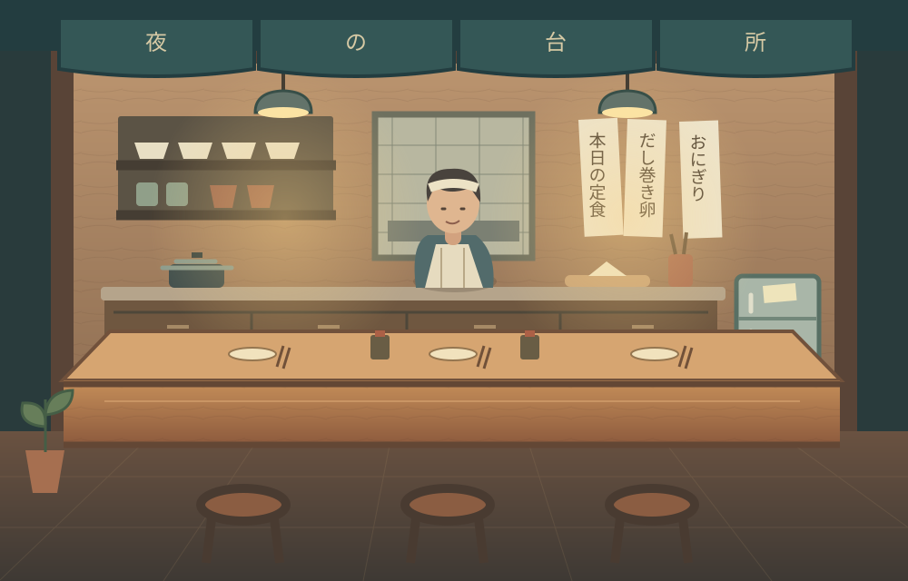

STORIES AT THE COUNTER
골목의 작은 일들A LITTLE FOOD, A LITTLE COMPANY
어서 오세요. 오늘도 따뜻한 한 끼.
가게 자금¥3,200
골목의 평판12 / 100

🏮
🪴
☾
도마를 꺼내고, 육수를 올리고.
오늘 밤은 어떤 이야기가 찾아올까요?
めしや 따뜻한 밥 있습니다
MAKE THIS PLACE YOURS
A LITTLE FOOD, A LITTLE COMPANY

도마를 꺼내고, 육수를 올리고.
오늘 밤은 어떤 이야기가 찾아올까요?